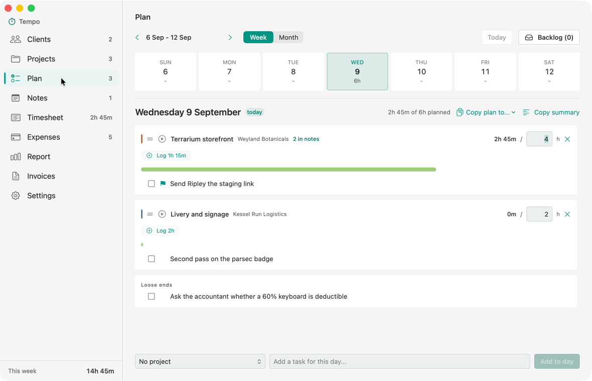
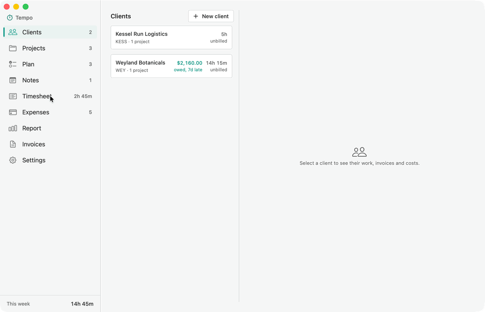

Tempo tracks time against projects and turns it into invoices you
can send. It runs on your Mac, it has no account to make, and everything it knows
is a file in a folder you chose.
Download for macOS
Free. 8.2 MB, macOS 14 or later.
Apple silicon and Intel. Signed and notarised by Apple.
Start the clock, stop it, and it is on the timesheet

Only one timer runs at a time, and starting a second stops the
first, so two clients can never be billed for the same hour.
The hours arrive on the invoice already itemised

The notes you wrote while working become the detail under each line.
Billable expenses come along too, and once an invoice is saved that time is
marked as billed so it cannot go on the next one.
What is actually true of it
Your data is a file
One JSON document, in a folder you pick, readable in any text editor in
twenty years. Put it in iCloud Drive and a second Mac reads the same one.
Nothing is locked in and there is nothing to export.
No account
Nothing to sign up for, nothing to log in to, no subscription, and no
server that can go away and take your invoices with it.
It phones nowhere
Tempo makes no network requests at all. It can check once a day whether a
newer version exists, and that is off until you switch it on, sends no
identifier, and never downloads or installs anything by itself.
It reads, never writes
If you let it show today's meetings on the Plan, it only ever reads your
calendar. It never adds or changes anything in it, and it does not ask for
access until you turn that on.
Invoices are documents
An invoice keeps the tax rate, terms and payment link it was raised at, so
changing a default next year does not quietly rewrite last year's paperwork.
What it does
Plan a day, track time against projects, and see the week on a timesheet.
Notes per project and day, with checkbox lines that become tasks.
Expenses, including mileage, repeating costs and receipts, with a CSV export.
Invoices from tracked time or priced up front, as PDFs, with reminders for
what is overdue.
A client view showing what is owed, what is unbilled, and what is waiting to
be recharged.